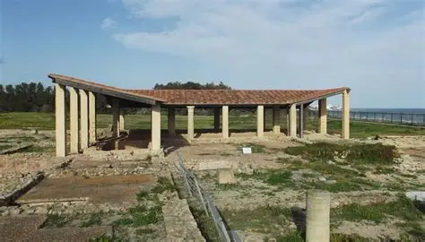

Site archéologique de Neapolis
Ancienne cité punique puis romaine, Neapolis (actuelle Nabeul) était un important centre de production de garum, sauce de poisson prisée dans l'Antiquité. Le site archéologique révèle des vestiges de maisons romaines, des cuves de salaison et de magnifiques mosaïques marines.